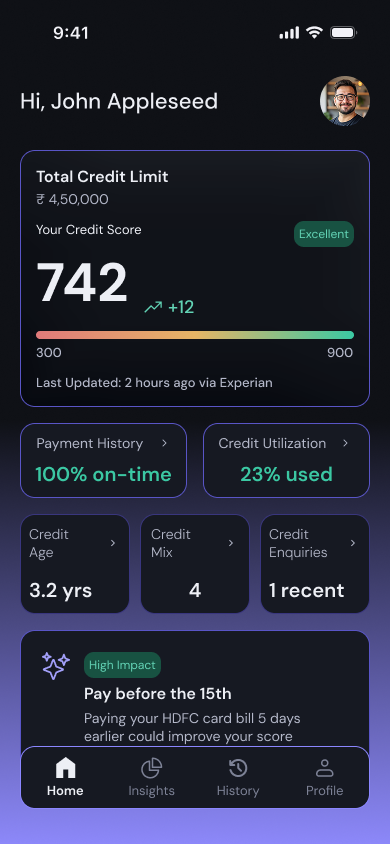
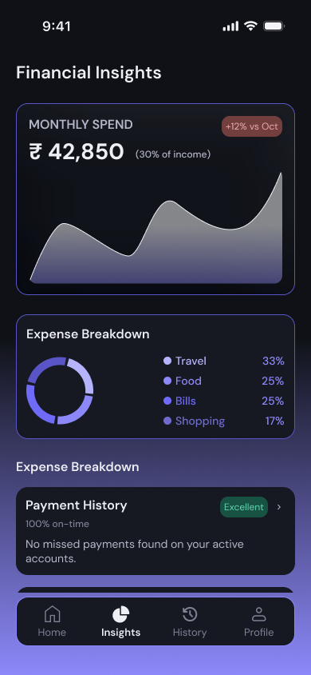
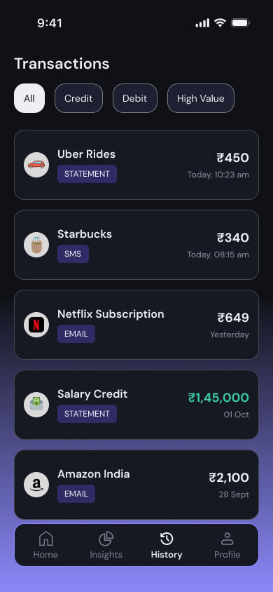
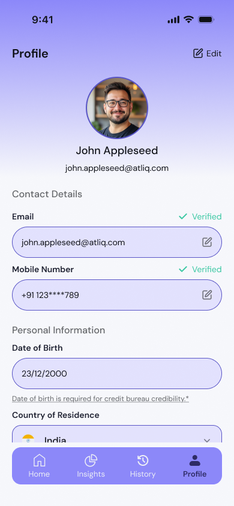

Novance AI
Novance AI is an AI-powered financial assistant designed to help users better understand their credit health and financial behavior. The platform analyzes financial data from multiple sources and converts it into structured insights and recommendations that guide users toward better financial decisions. The goal of Novance AI is to simplify financial information and present it in a clear, actionable format through an intuitive mobile interface.
UX Audit & Ideation
To understand how financial platforms present data, I analyzed existing financial tools. The analysis showed that many focus heavily on raw data while providing limited guidance on how to interpret it. During ideation, the main focus was to transform complex financial information into simple and understandable insights.
- A dashboard summarizing financial health indicators
- Visual breakdown of spending categories
- Credit score insights with clear explanations
- Personalized recommendations based on financial patterns
Final Design
The final design focuses on presenting financial data in a structured and intuitive interface. It features:
- A clear dashboard showing financial health indicators
- Visual breakdown of spending patterns
- Personalized recommendations





Expected Impact
This could potentially lead to:
- Better understanding of credit health
- Improved financial decision-making
- Greater transparency
Reflections & Learnings
This project helped me explore the challenges of designing financial products that deal with sensitive and complex data. Through this process, I learned how important clarity, trust and data visualization are when designing fintech applications.